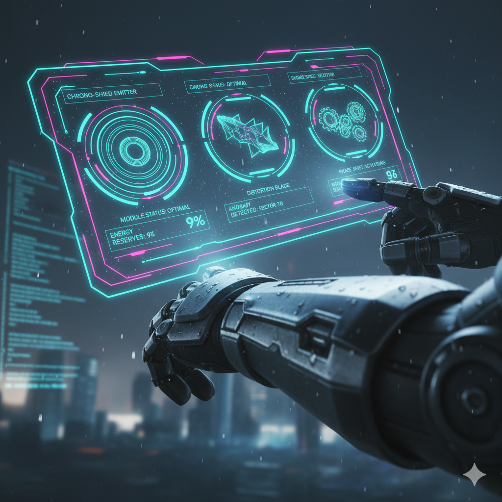

Chron-Suit Augmentation
Customize your loadout with temporal shields, distortion blades, and phase shift modules. Adapt your tech to exploit the weaknesses of emergent anomalies.

Hunt down digital ghosts before they fracture reality completely.
The metropolis is collapsing. Time itself has become fragmented, manifesting as digital "ghosts" – echoes of failed timelines. You are the last Temporal Fixer, equipped with nothing but a chron-suit and the imperative to restore coherence. Every moment is a fray, every anomaly a threat to existence.
Customize your loadout with temporal shields, distortion blades, and phase shift modules. Adapt your tech to exploit the weaknesses of emergent anomalies.
Explore an intricately designed city where neon signs flicker and reality tears at the seams. Each district holds secrets critical to preventing the final collapse.